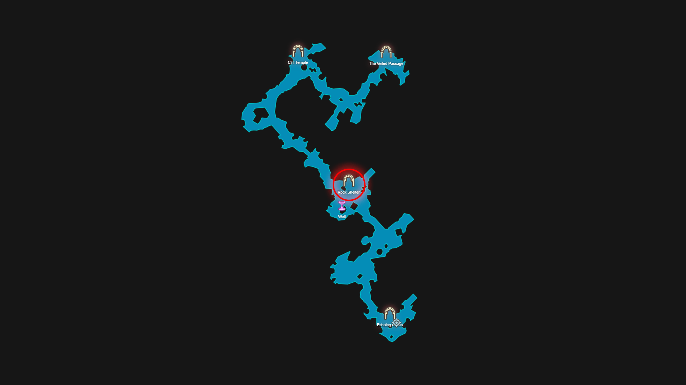
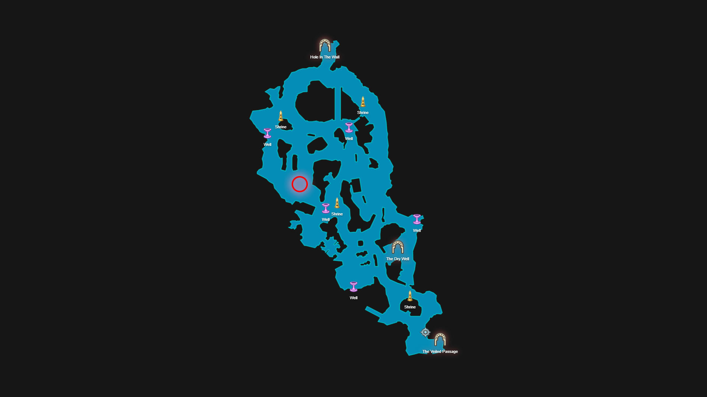
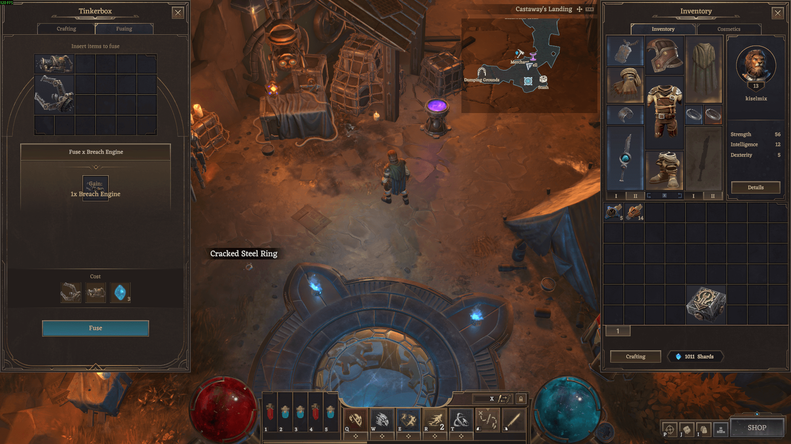
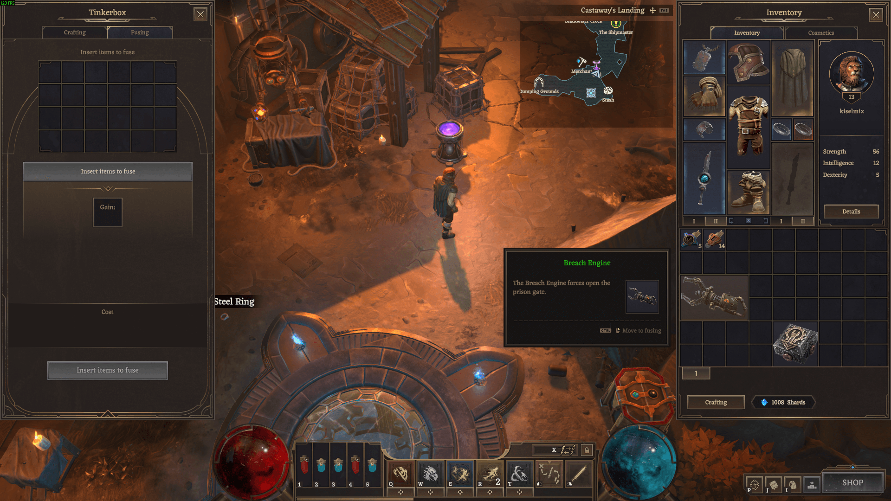
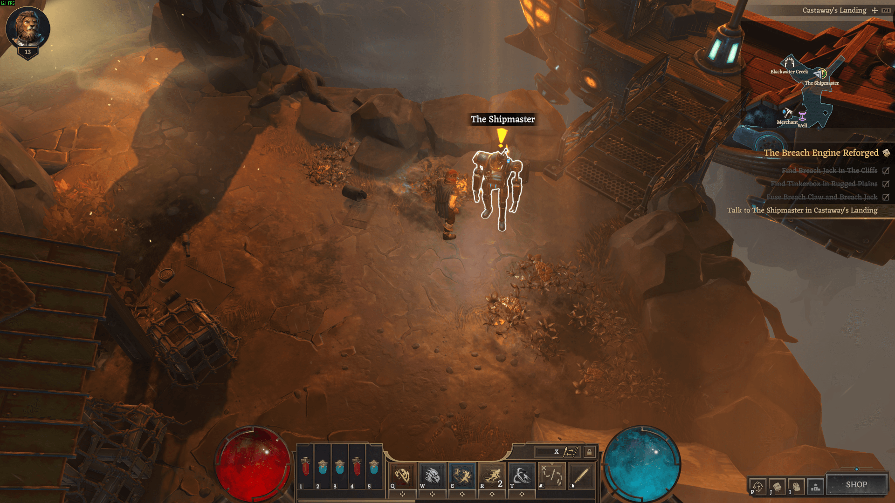

The Breach Engine Reforged
Reward: 1 Talent Point; 5 skill key
I've caught a transmission from the Rock Shelter in the Cliffs. You'll find the Breach Jack there. There should be a Tinkerbox somewhere in the Rugged Plains.
How to complete
1. Step 1 — Find Breach Jack in The Cliffs
Enter the Rock Shelter dungeon. You'll find a Breach Jack in the chest.

2. Step 2 — Find Tinkerbox in Rugged Plains
Find the bot and kill it. It will drop a Tinkerbox.

3. Step 3 — Activate Tinkerbox
Use Tinkerbox, activate it with right mouse button. Drag Breach Claw and Breach Jack into the window that opens.

4. Step 4 — Fuse Breach Claw and Breach Jack

5. Step 5 — Talk to The Shipmaster in Castaway's Landing
